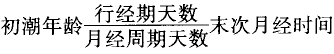
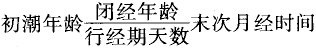

A.局限性凹陷
B.局限性膨隆
C.局限性搏动
D.腹部平坦
E.局限膨隆随腹式呼吸而移动
参考答案：B
A.大于1000ml
B.大于500ml
C.大于2000ml
D.大于2500ml
E.大于3000ml
参考答案：E
A.中、重度脾肿大
B.左侧胸腔积液
C.肝左叶肿大
D.急性胃扩张
E.空腹时
A.肾盂积水
B.肾盂积脓
C.肾肿瘤
D.肾下垂
E.多囊肾
参考答案：D
A.腹部膨胀且腹式呼吸消失
B.腹部膨胀伴移动性浊音阳性
C.上腹部局限性腹肌紧张、压痛、反跳痛
D.肝浊界上界消失
E.全腹肌紧张、压痛、反跳痛
A.急性重症胰腺炎
B.十二指肠溃疡急性穿孔
C.胃溃疡急性穿孔
D.肠梗阻穿孔
E.卵巢囊肿破裂
A.眼睛从头部方向观察
B.眼睛从脚部方向观察
C.眼睛从右侧方向观察
D.眼睛视线降至腹平面，呈切线方向观察
E.眼睛从脐上方观察
A.局限性膨隆有无随呼吸而移动
B.局限性膨隆有无搏动
C.局限性膨隆有无随体位而移动
D.仰卧作屈颈抬肩动作看局限性膨隆变得明显或消失
E.尺压试验有无有节奏的跳动
A.Murphy征
B.Courvoisier征
C.Grey-tumer征
D.Peritonealirritation征
E.Cullen征
A.胆囊点
B.McBurney点
C.季肋点
D.上输尿管点
E.肋脊点
参考答案：A
A.搏动在深呼气时明显为右心室肥厚
B.搏动在深吸气时明显为右心室肥厚
C.搏动在呼气和吸气均明显为右心室肥厚
D.搏动在深压时明显为主动脉搏动
E.搏动在浅表触诊时明显为右心室肥厚
A.脏器的炎症已累及腹膜的脏层
B.脏器的炎症已累及腹膜的壁层
C.脏器的炎症已累及肠系膜
D.脏器的炎症已累及邻近脏器
E.脏器的炎症已累及大网膜
A.右心衰竭肝淤血症
B.肝硬化门静脉高压症
C.上腔静脉阻塞综合征
D.下腔静脉阻塞综合征
E.肝静脉阻塞综合征
A.幽门梗阻
B.急性胃扩张
C.巨大卵巢囊肿
D.腹腔内有游离腹水
E.液波震颤(+)
A.仰卧时浊音在中腹部，鼓音在两侧腹部
B.浊音无移动性
C.液波震颤阴性
D.尺压试验阳性
E.振水音阳性
A.膀胱胀大
B.腹水
C.妊娠子宫
D.子宫肌瘤
E.卵巢囊肿
A.胆囊癌
B.急性胆囊炎
C.胆囊结石
D.急性病毒性肝炎
E.胰头癌
A.肠型
B.移动性浊音阳性
C.液波震颤
D.振水音
E.高亢肠鸣音
A.肝硬化腹水
B.原发性肝癌伴腹水
C.肝结核伴结核性腹膜炎
D.肾病综合征伴腹水
E.右心衰竭、肝淤血伴腹水
A.呕吐棕黄色带粪臭的内容物
B.呕吐大量胃、肠、胰液和胆汁的内容物
C.剧烈呕吐胃内容物后呕吐血液
D.呕吐大量酸酵宿食
E.喷射性呕吐
A.X线胃肠钡餐
B.腹部彩超
C.核素显像
D.腹部CT
E.胃镜检查
A.胰头癌
B.胰体癌
C.急性胆囊炎
D.急性胆管炎
E.急性黄疸型肝炎
参考答案：C
A.盲肠肿瘤
B.输尿管结石
C.急性阑尾炎
D.肠系膜淋巴结炎
E.前列腺癌伴腹腔转移
A.肝颈静脉回流征
B.肝震颤征
C.肝脏搏动征
D.肝区波动感
E.肝区摩擦感
A.肝区摩擦感
B.收缩期动脉杂音
C.连续性静脉杂音
E.脾区摩擦音
A.精索急性炎症
B.血丝虫病
C.输精管结核
D.精索静脉曲张
E.梅毒
A.附睾结核
B.淋病
C.精索急性炎症
E.流行腮腺炎
A.淋病
B.附睾结核
C.睾丸肿瘤
D.睾丸炎
E.睾丸鞘膜积液
A.肛裂伴感染
B.直肠周围脓肿
C.直肠癌
D.直肠脱垂
E.内痔
A.直肠息肉
B.直肠癌
C.内痔
D.肛门直肠周围脓肿
E.肛裂
A.良性前列腺肥大
B.急性前列腺炎
C.前列腺结核
D.前列腺癌
E.前列腺增生
A.库欣综合征
B.慢性肾功能不全
C.糖尿病
D.呼吸性酸中毒
E.严重呕吐
A.呼吸性碱中毒
B.库欣综合征
C.低蛋白血症
D.胃肠引流
E.慢性肾功能不全少尿期
A.16～20
B.26～30
C.36～40
D.46～50
E.56～60
A.Fanconi综合征
B.甲状旁腺功能减退症
C.VitD过多
D.肢端肥大症
E.Addison病
A.甲状旁腺功能亢进症
B.VitD抵抗性佝偻病
C.肾小管性酸中毒
D.肾功能不全
E.血液透析
A.离子钙
B.蛋白结合钙
C.磷酸钙、碳酸钙
D.碳酸钙
E.枸橼酸结合钙
A.Na
B.K
C.Ca
D.Cl
E.HCO
A.铁利用障碍
B.铁释放增多
C.铁蛋白吸收增多
D.慢性失血
E.铁摄入过多
A.溶血性贫血
B.缺铁性贫血
C.消化性溃疡
D.慢性炎症
E.妊娠期
A.是一种能与Fe结合的球蛋白
B.是一种急性时相反应蛋白
C.可作为判断肝脏合成功能的指标
D.参考值为28.6~51.9μmol/L
E.其减低见于缺铁性贫血
A.是去铁蛋白和Fe形成的复合物
B.是铁的贮存形式
C.是判断是否缺铁或铁负荷过量的指标
D.减低见于溶血性贫血
E.可作为营养不良的调查指标
A.Tf
B.TIBC
C.SF
D.FEP
E.ZPP
A.炎症
B.肿瘤
C.白血病
D.恶性贫血
E.营养不良
A.缺铁性贫血
B.铁粒幼细胞贫血
C.珠蛋白生成障碍性贫血
D.慢性炎症性贫血
E.溶血性贫血
A.血红蛋白铁
B.贮存铁
C.组织内铁
D.转运铁
E.游离铁
B.巨幼细胞贫血
C.铁粒幼细胞贫血
D.阵发性睡眠性血红蛋白尿
E.铅中毒
A.血清铁减少，未饱和铁结合力增高
B.血清铁减少，未饱和铁结合力减少
C.血清铁减少，总铁结合力正常
D.血清铁减少，总铁结合力减低
E.血清铁正常，未饱和铁结合力减少
A.清蛋白
B.转铁蛋白
C.铁蛋白
D.铜蓝蛋白
E.血红蛋白
A.血清铁
B.血清铁蛋白
C.游离原卟啉
D.转铁蛋白
E.铁饱和度
A.主要存在于胞质和线粒体内
B.以骨骼肌和心肌含量最多
C.男性CK活性高于女性
D.不受性别、年龄、种族和生理状态的影响
E.红细胞内CK含量极少
A.发病3~8小时即明显增高
B.峰值在10～36小时
C.3～4天恢复正常
D.发病8小时内CK不增高可排除AMI
E.病程中CK再次升高提示再梗死
A.急性心肌梗死
B.心肌炎
C.多发性肌炎
D.溶栓治疗
E.甲状腺功能亢进症
A.主要存在于心肌组织中
B.对AMI诊断的灵敏度高于总CK
C.高峰时间与预后有一定关系
D.高峰出现早者预后差
E.其增高也可见于肌肉疾病及手术
A.CK-MB是CK-MB在心肌细胞中的主要存在形式
B.诊断AMI的灵敏度和特异性高于CK-MB
C.MB/MB>1.5
D.对判断溶栓治疗的冠脉再通有价值
E.CK-MB<1.0U/L
A.以心肌、骨骼肌、肾脏含量最丰富
B.红细胞内含量也极为丰富
C.AMI时其增高较CK、CK-MB增高出现早
D.肝脏疾病时其活性也增高
E.对诊断AMI具有较高的灵敏度，但特异性较差
A.LD、LD主要来自心肌
B.其检测结果具有病变组织的定位作用
C.LD/LD增高伴有LD增高的AMI患者预后差
D.肝脏疾病者LD增高
E.肿瘤生长速度与LD增高程度有一定关系
B.恶性肿瘤
C.慢性支气管炎
D.肝硬化
E.骨骼肌损伤
A.LDH
B.LDH
C.LDH
D.LDH
E.LDH
A.AST
B.ALT
D.CK
E.CK-MB
A.CK
B.ALP
C.CK-MB
D.AST
A.1种
B.2种
C.3种
D.4种
E.5种
A.心肌
B.骨骼肌
C.肝脏
D.胰腺
E.脑
A.3～8小时升高，10～36小时达到峰值
B.3~8小时升高，9～30小时达到峰值
C.1～4小时升高，4~8小时达到峰值
D.3～6小时升高，10~24小时达到峰值
E.0.5~2.0小时升高，5～12小时达到峰值
B.CK-MM
C.CK-BB
D.CK-MB
E.CK-MB异型
A.CK-MB
B.Mb
C.LD
D.cTnT
E.cTnl
E.FABP
B.cTnT
C.Mb
D.FABP
E.LD
A.LD
C.FABP
A.cTnl
E.Mb
A.骨骼
B.血小板
C.红细胞
D.肝脏
E.前列腺
A.急性胰腺炎
B.胰腺癌
C.腮腺炎
D.慢性胰腺炎
E.急性胆囊炎
A.腮腺炎
B.消化性溃疡
C.机械性肠梗阻
E.急性胰腺炎
A.急性胆囊炎
B.急性胰腺炎
C.肠梗阻
D.胰腺癌
E.胰腺囊性纤维化
A.80%～90%
B.70%～80%
C.50%～70%
D.30%～50%
E.20%～30%
A.PChE是一种糖蛋白
B.AChE主要作用是水解乙酰胆碱
C.ChE活性增高见于有机磷中毒
D.肝脏疾病ChE活性减低
E.ChE活性可作为有机磷中毒的诊断和监测指标
A.多发性骨髓病
B.肺癌
C.淋巴瘤
D.婴幼儿手足搐搦症
E.急性肾功能不全
A.多以氯化钠形式存在
B.维持血液酸碱平衡
C.维持神经、肌肉正常应激性
D.主要存在于细胞内
E.主要来源于食物中的钠盐
B.急性心肌梗死
C.甲状旁腺功能减退症
D.VitD抵抗性佝偻病
E.肾小管性酸中毒
A.高密度脂蛋白升高
B.血清铜升高
C.三酰甘油升高
D.α-脂蛋白升高
E.胆固醇升高
A.CM
B.HDL
C.LDL
D.VLDL
E.Lp(a)
B.急性白血病
C.急性心肌炎
D.急性肝炎
B.LD
D.LD
A.TT
B.TT
C.γT
D.FT
E.FT
D.TBG
E.TRUR
C.FT
E.TBG
A.FPG6.1mol/L
B.2小时PG7.8mol/L
C.OGTT减低
D.血清胰岛素为14mU/L
E.空腹C-肽为1.0nmol/L
C.ALT
E.α-HBDH
A.尿糖
B.空腹血糖
C.葡萄糖耐量试验
D.皮质醇葡萄糖耐量试验
E.空腹胰岛素测定
A.大便常规
B.血常规
C.血糖，酮体
D.ECG
E.头颅CT
A.症状发作时的胰岛素水平
B.24小时尿糖测定
C.空腹血糖
D.胰岛素释放试验
E.糖基化血红蛋白
A.TSH
B.TT、TT
C.FT、FT
D.TGA、MCA
E.甲状腺I吸收
C.CT
D.PTH
E.γT
E.CT
A.肾上腺皮质功能亢进症
B.Addison病
C.睾丸癌
D.异源性ACTH综合征
E.女性多毛症
C.腺垂体功能减退症
E.甲状腺功能减退症
A.
B.
C.
D.
E.
A.<300字
B.高度概括
C.综合体检中阳性结果
D.描述检验的阳性和重要阴性结果
E.字数超过800字
A.诊断名称应确切，分清主次，顺序排列
B.主要疾病在前，次要疾病在后
C.并发症列于最后
D.初步诊断对于待查病例不用列出可能性较大的诊断
E.诊断应尽可能地包括病因诊断、病理解剖部位和功能诊断
A.指出主要症状或体征
B.描述症状／体征持续时间
C.文字精练
D.字数在20字左右
E.不能直接使用病名或描述实验室检查异常
微信关注